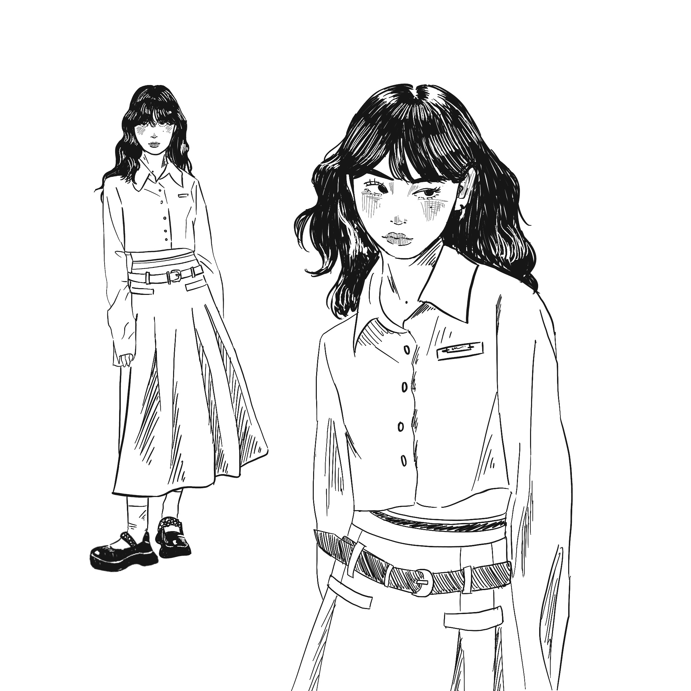
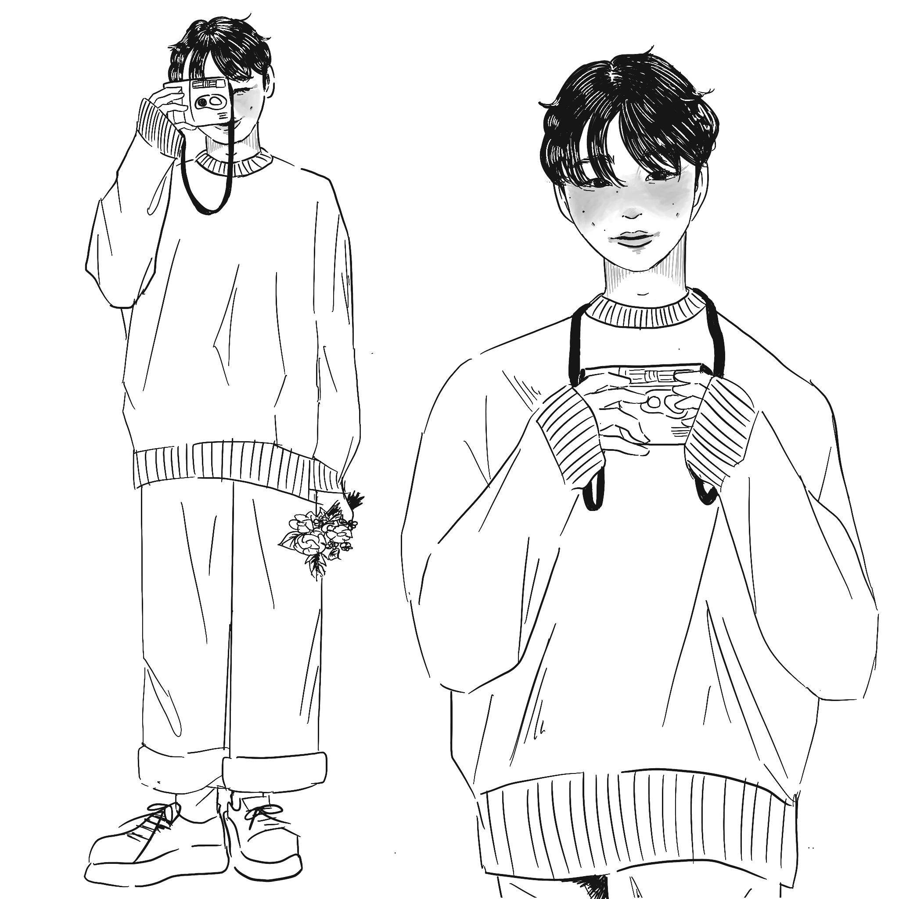
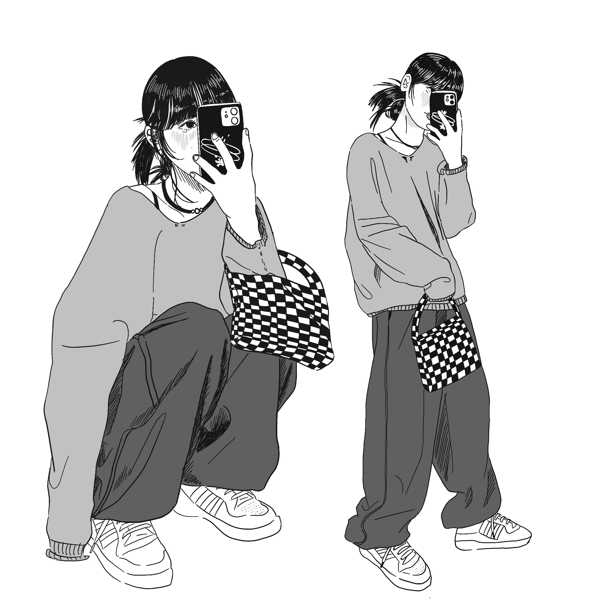

인체 및 패션 드로잉
그림 연습을 위해 시간이 날 때마다 틈틈이 그렸던 연습 드로잉입니다.
사진을 보고 그림을 길이와 크기를 가늠하여 그려보며
저마다의 분위기와 재질의 질감을 살려 그리고자 노력하였습니다.
미숙하지만 이렇게 저렇게 그려보며 다양한 그림체를 시도해볼 수 있어 좋았습니다.



중간중간 삽화를 넣고, 칸을 나눠 비교적 자유롭게 그림을 진행하였습니다.
동화책이라는 특성과 스토리의 분위기에 맞춰 귀여운 그림체를 선택하였습니다.